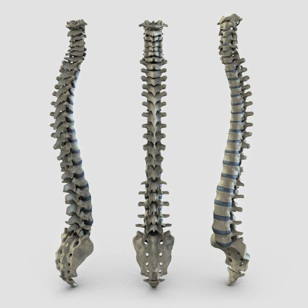
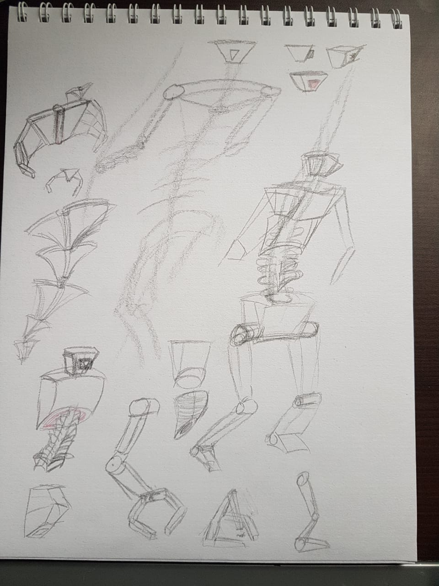

Primitive Robot
Problem: Create a biped robot using only Maya primitves. The primitives may be translated, rotated, and scaled into place. No other mesh editing is allowed.
I started out by looking for references and creating some rough concept art. The biggest challenge I faced was figuring out how to add details without subdividing the mesh. I ended up creating multiple primitives to increase the level of detail.
